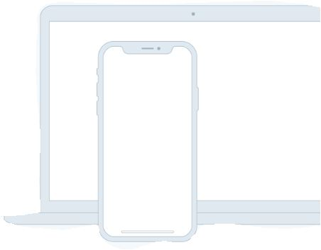

TAGLINE

Source helps creators do more of what they love
A device that anables collaboration will lessen the chance of work having to be completley redone.

Feature One
In such a test, the user performs realistic tasks by interacing with the paper prototype
First LinkFeature Two
Three techniques of paper prototyping used for usuaablity testing are comps, wireframes
Second LinkFeature three
Rapid prototyping involves a group of designers who each create a paper prototype
Third LinkFeature Four
Functionality is similarly unimportant, but in this case are closer to the final product
Fourth Link